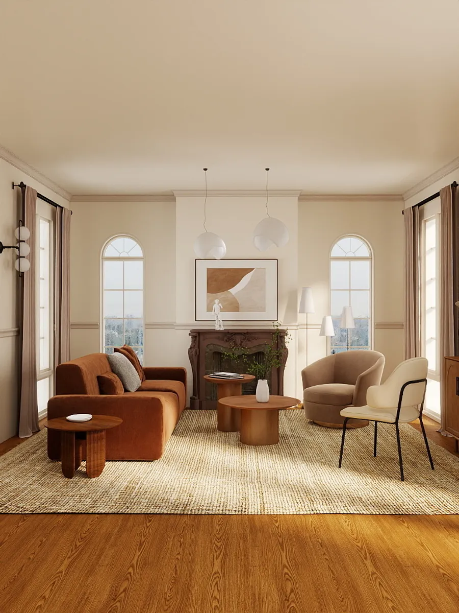
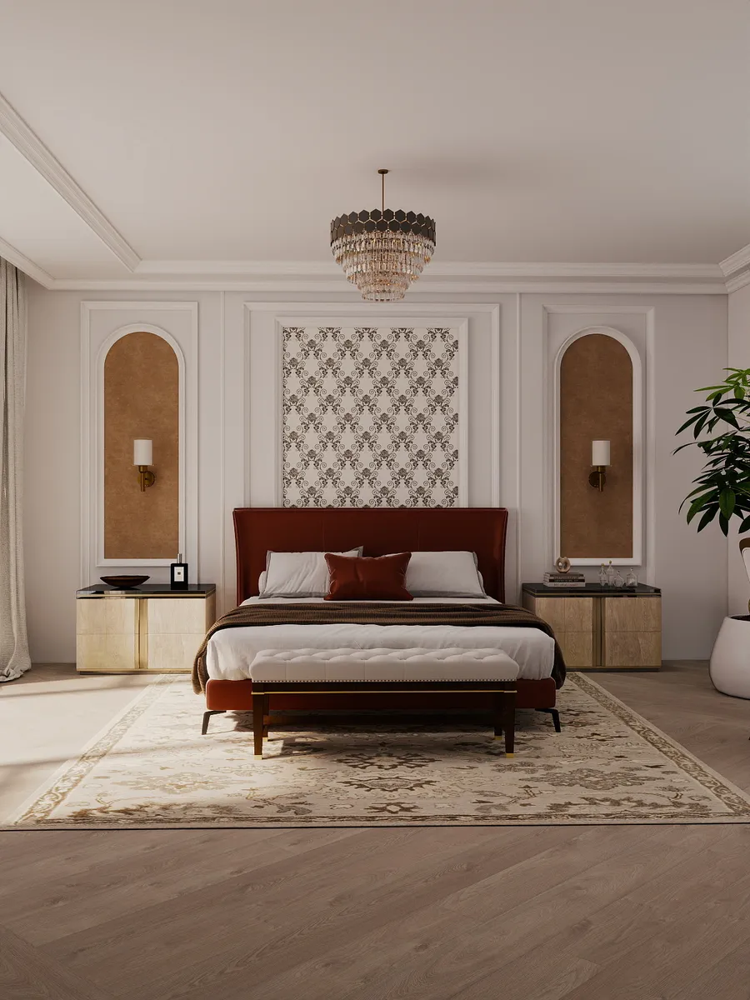
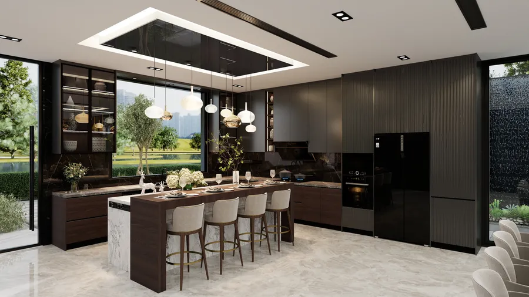
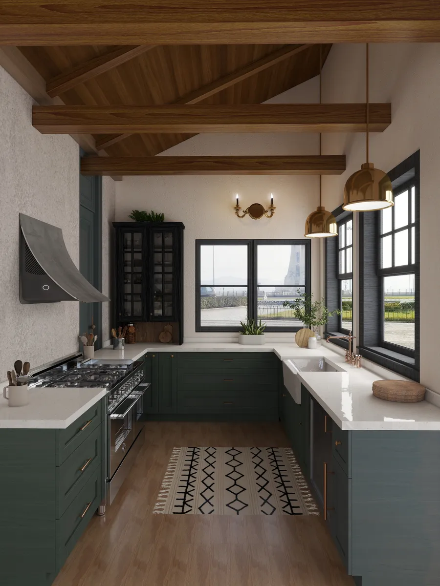

My interior design work
Core Elements of Interior Design
- Space Planning: Arranging room layouts, furniture flow, and circulation paths so the area works efficiently.
- Color and Materials: Selecting paint, wallpapers, textiles, tiles, and sustainable finishes to set the mood
- Layered Lighting: Combining ambient, task, and accent lighting (keeping rest areas warm at 4,000 Kelvin or under) rather than relying on a single overhead bulb.
- Three-Dimensional Composition: Building spaces using three visual layers—foundation (sofas, beds), support (side tables, consoles), and finishing touches (art, plants, textiles)
- Contrast and Cohesion: Adding variety in texture, shape, or scale while tying the room together with a repeating "red thread" of color or material
Interior Design VS interior decoration
- Interior Design: Focuses on the structural and functional side of a room, including space layouts, building codes, lighting plans, material specifications, and contractor coordination.
- Interior Decoration: Focuses strictly on surface aesthetics, such as furniture selection, rugs, curtains, artwork, and styling.
Types of Projects
- Residential: Apartments, maisonettes, villas, custom kitchens, and living rooms.
- Commercial & Office: Workstations, executive suites, and collaborative meeting rooms.
- Hospitality & Retail: Hotels, lodges, restaurants, cafés, and brand showrooms.
- Institutional: Schools, universities, and healthcare facilities.
Living Room Design

Design Overview
This modern light luxury living room showcases a vibrant yet sophisticated yellow palette, creating a warm and inviting atmosphere. A plush velvet sofa in golden tones serves as the centerpiece, offering both comfort and a touch of elegance. Clean lines, subtle metallic accents, and refined furniture pieces enhance the contemporary aesthetic without overwhelming the space. Natural light and carefully positioned ambient lighting emphasize textures and colors, adding depth and richness. Thoughtful details like soft rugs, decorative cushions, and minimalist art bring harmony to the design. The result is a chic, cozy, and luxurious living space that radiates energy while maintaining modern sophistication.
Bedroom Design

Design Overview
This luxurious red bedroom exudes bold sophistication and minimalist elegance. Deep red tones on walls, bedding, and upholstery create a warm, intimate atmosphere, while plush textures like velvet and silk add richness and comfort. Sleek metallic accents, mirrored surfaces, and carefully curated lighting enhance the opulent feel without overwhelming the senses. Minimalist yet refined furniture ensures functionality while maintaining a sense of grandeur. Thoughtful layering of fabrics, rugs, and cushions creates depth and visual interest, balancing intensity with serenity. The overall design offers a glamorous and indulgent retreat, where luxury meets comfort, making the bedroom both striking and inviting.
Dining Room Design

Design Overview
This modern dining room design combines elegance with functionality. A sleek, contemporary table serves as the focal point, surrounded by stylish chairs that offer both comfort and aesthetic appeal. Warm lighting creates an inviting atmosphere, while carefully chosen decor elements add personality and character. The space is designed to facilitate both intimate dinners and larger gatherings, making it a versatile and practical area for entertaining guests.
Kitchen Design

Design Overview
This kitchen embraces a soothing mix of natural green cabinets and warm wood textures, creating a fresh and inviting atmosphere. The distinctive sloped ceiling becomes the focal point, opening up the vertical space and guiding natural light across the room. The harmony between green tones and timber elements enhances the kitchen’s organic feel, while clean lines and a simple layout keep the overall design modern and functional. It’s a bright, calm space designed for effortless everyday living.